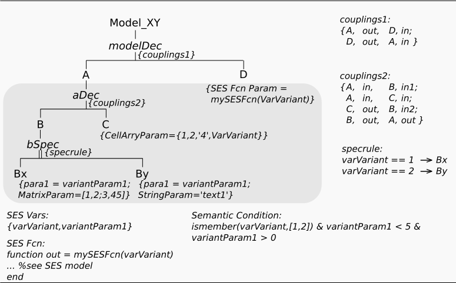
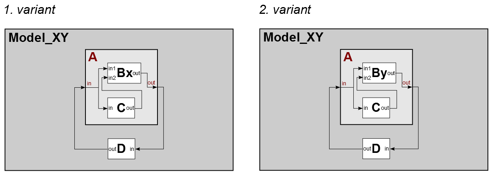

Entity Attributes & SES Functions
Motivation
This example shows, how you can assign parameters (attributes) to entity nodes. Furthermore, it shows how to deal with complex calculations by using SES Functions. The SES in this example has the same structure as the SES in example 2, but it specifies additional attributes at entity nodes using SES Variables and SES Functions.
Basic SES:

In the SES specified model structures:

Entities
Variant 1 - The model consist of:
- atomic models (AM): Bx, C, D
- coupled models (CM): A
Variant 2 - The model consist of:
- atomic models (AM): By, C, D
- coupled models (CM): A
Description
Notice, that here the terms attribute and parameter are used equivalently.
Defining Attributes
You can assign attributes to each entity by defining a specified name and a specific value.
Possible values are:
- Numbers (1, -245, 4.657,... )
- String ( 'helloWorld',...)
- SES Variables (var1, var2,...)
- SES Functions (mySESFcn(var1,var2),...)
- Numerical Calculations ((3*5+1))*sesVar1,...)
- Logical Expressions (sesVar1 & sesVar2, ...)
- Matrices ( [1,765,5;1:3], ... )
- Cell Arrays ( {123,'hello',var1} )
As you can see, it is allowed to use SES Variables and SES Functions, which means you can define variable parameter configurations in an SES. You can find some examples at each entity node in the SES of this example.
SES Functions
Basically, SES Functions are like general MATLAB Functions. You can use and define them in the common way (built-in fcn, user-defined fcn), but NOTICE, that an SES Function can only return one output parameter. If you want return more values, you must collect them in an appropriate data structure (array, matrix, cell array, ...). In order to use a MATLAB function as SES Function you have to import it (see tab "Functions"). However, you have to use SES Functions on your own risk. That means, the editor can not check, if your implemented functions are correct. If not, it will lead to an error message during pruning. Hence, test your functions within MATLAB.
The concept of SES Functions advances the pure declarative knowledge representation of an SES by procedural knowledge. You can find more complex applications of SES Functions in example 7 and in the Advanced Examples section.